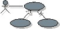

| Артефакт: Модель прецедентов |
|
|  |
| Этот артефакт представляет собой модель намеченных функций системы и ее среды и выступает в роли договора между заказчиком и разработчиком. Он применяется в качестве существенных входных данных для деятельностей анализа, проектирования и тестирования. |
Домены: Требования
Типы рабочих продуктов: Модель |
|
Назначение
|
Модель вариантов использования применяется следующими сотрудниками:
-
Заказчик утверждает модель вариантов использования. После этого вы уверены, что система представляет собой то, чего
желает заказчик. Эту модель также можно использовать для обсуждения системы с заказчиком во время разработки.
-
Потенциальные пользователи используют модель вариантов использования для лучшего понимания системы.
-
Архитектор программного обеспечения использует модель вариантов использования для определения значимой с точки
зрения архитектуры функциональности.
-
Проектировщики используют модель вариантов использования для получения обзора системы. Например, для помощи при
уточнении системы требуется документация по модели вариантов использования.
-
Руководитель использует модель вариантов использования для планирования и отслеживания моделирования вариантов
использования, а также для последующего проектирования.
-
Сотрудники в организации, исполнительных и управляющих комитетах, не участвующие в проекте, используют модель
вариантов использования для получения представления о проводимой работе.
-
Сотрудники регулярно просматривают модель вариантов использования для обеспечения обратной связи с разработчиками.
-
Проектировщики применяют модель вариантов использования как основу своей работы.
-
Ответственные за тестирование применяют модель вариантов использования для планирования деятельностей тестирования
(тестирование варианта использования и интеграции) как можно раньше.
-
Разработчики следующей версии системы применяют модель вариантов тестирования для понимания работы существующей
версии.
-
Редакторы технической документации применяют модель вариантов использования в качестве основы для создания
руководства пользователя системы.
|
Взаимосвязи
| Содержащиеся артефакты |
|
| Роли | Ответственный:
| Изменен:
|
| Задачи | Вход для:
| Выход из:
|
Описание
| Основное описание |
Модель вариантов использования должна служить связующей средой и
может служить в роли договора между заказчиком, пользователями и разработчиками системы по вопросам функциональности
системы. Эта модель позволяет:
-
Заказчикам и пользователям - убедиться, что система будет такой, как они ожидают.
-
Разработчикам системы - создать то, что ожидается.
Модель вариантов использования состоит из вариантов
использования и субъектов. Каждый вариант использования в модели описан подробно, шаг
за шагом показывая, как система взаимодействует с субъектами, и что система выполняет в данном варианте использования.
Варианты использования действуют как связующая нить на протяжении жизненного цикла проекта; одна и та же модель
вариантов использования применяется при анализе, проектировании, реализации и тестировании
системы.
|
Иллюстрации
Доводка
| Опции представления |
Представление UML: Модель, имеющая стереотип <<use-case model>>
Модель вариантов использования может иметь следующие свойства:
-
Введение: Текстовое описание, которое служит в качестве краткого введения в модель.
-
Обзорное описание: Текстовое описание, которое содержит информацию, не отраженную в остальной
части модели вариантов использования, включая типичные последовательности, в которых варианты использования
применяются пользователями, и функциональность, не обеспечиваемая моделью.
-
Пакеты вариантов использования: Пакеты в модели, представляющие иерархию.
-
Варианты использования: Варианты использования в модели, принадлежащие пакетам.
-
Субъекты: Субъекты в модели, принадлежащие пакетам.
-
Отношения: Отношения в модели, принадлежащие пакетам.
-
Диаграммы: Диаграммы в модели, принадлежащие пакетам.
-
Представление варианта использования: Представление варианта использования модели, которое
представляет собой архитектурное представление, показывающее значимые варианты использования и/или
сценарии.
Следует настроить модель вариантов использования для поддержи потребностей данного проекта. В процессе настройки
можно включить только подмножество рабочих продуктов (свойств), настроить уровень формализма при создании и управлении
подчиненными рабочими продуктами и настроить отдельные подчиненные рабочие продукты.
|
Дополнительные сведения
| Справочные таблицы |
|
| Рекомендации |
|
© Copyright IBM Corp. 1987, 2006. Все права защищены..
|
|